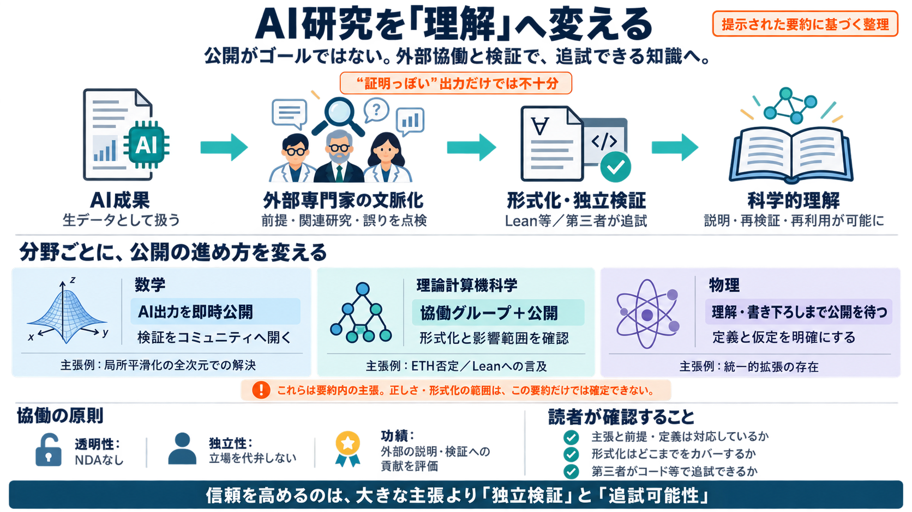

Exponential time hypothesis - Wikipedia
If the exponential time hypothesis is true, then 3-SAT would not have a polynomial time algorithm, and therefore it woul…

数学・計算機科学・物理のAI成果を「生データ」として扱い、専門家が文脈化して検証し、理解を深める仕組みを整理します。 （Bilingual: 生データ “raw research data”＝生の材料、文脈化 “contextualization”＝意味づけ）
学術的な流れ（仮説→証明/反証→形式化→査読・再検証）に沿って、理解へ転換する工程が必要です。 （形式化 “formalization”＝機械可検証の形に落とすこと）
原則：透明性（NDAなし）、独立性（無報酬参加OK）、クレジット（AI内部発見に学術功績を要求しない）。 （認識 “recognition”＝説明や書き下ろし等への評価）
分野ごとに「誤解コスト」「必要な定義・計算の粒度」「検証の段取り」が違うため、最短経路も違うという判断です。
（Bilingual: local smoothing＝局所平滑化、Kakeya＝カケヤ予想） ここでのコアは「単独の定理」ではなく、関連予想群へ連鎖する点です。
影響は「どの結果がETHを条件として使っているか」を棚卸しして再検証することで明らかになります。
“存在証明”は、どの定義・仮定の下で成立するかが理解の核心です。 （Bilingual: existence proof＝存在証明）
ゴールは「AIが出した結論」そのものより、コミュニティが追検証できる形へ落とし込むことです。
ただし運用では「貢献の可視化」と評価体系の整合が課題になり得ます（認識の実装次第）。
読者の姿勢：大きい主張＝正しいと即断せず、raw data/Leanコード/書き下ろしの質で判断する。
注意：このスライドは「提示された要約文」中心であり、各成果の技術的詳細（Leanの範囲、形式化と自然言語の対応、公開範囲の全容）は別途原典を追う前提です。
If the exponential time hypothesis is true, then 3-SAT would not have a polynomial time algorithm, and therefore it woul…
Although there’s no “purely mechanical procedure” to de-termine if a mathematical statement S is true or false, there is…
Verification processes typical of NP rely on consistency checks across exponentially large solution spaces. In log-space…
“P vs. NP” where in addition to the overall input size n, one studies how a relevant secondary measurement affects the co…
[11:25] It would be something like this MCSP is in P if and only if NP is in P. It's maybe a bad notion of NP completene…